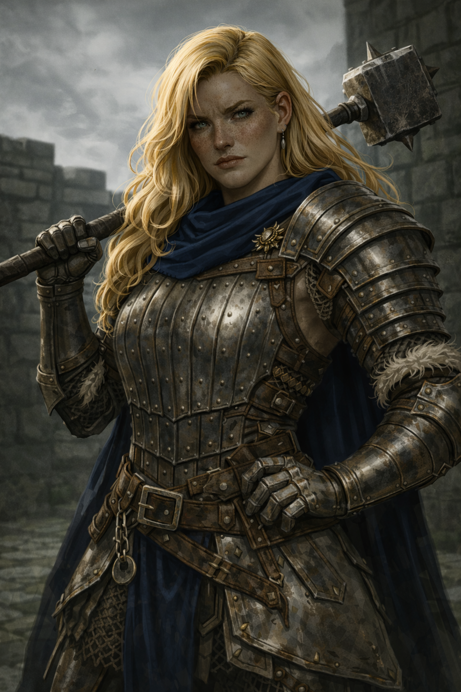
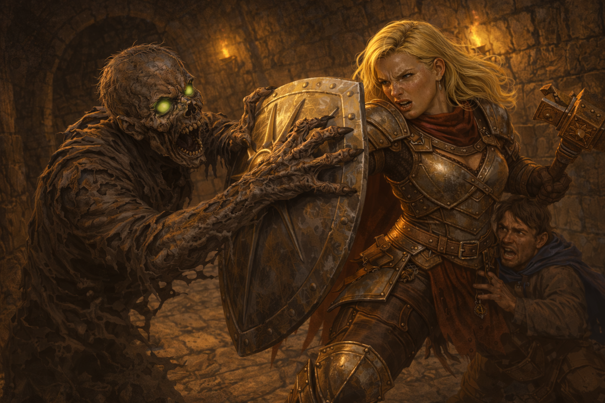

Salynna "Sally" Tarrant¶

“Break the rules. Keep the oath.”
Gifted Human Trickster Paladin sent by her noble family to a boarding school, hoping to file down the "rough edges". Instead she started her own semi-criminal operation for ten full years before purpose found her; now she is the ultimate bodyguard, smothering her Ward with an overreach of competence, cold steel and street hustling.
Character Overview¶
- Species: Human
- Class: Paladin 5 (Oath of Redemption; flavored homebrew)
- Background: Charlatan
- Age: 25
- Alignment: Neutral
Quick Intro
At the Table
-
- Roguish Paladin who protects through both divine power and "creative problem-solving"; Flirts, jokes and carouses, but never slacks off her vigilance.
-
- Fears becoming purposeless again, leans into "protective older sister" who handles problems without asking permission first.
-
- Thinks highly of herself and her abilities. Not because of faith or virtue, but because she's confident and damn good at what she does.
-
- Economically minded, but protective instincts: Complains loudly if a merchant rips her off, but will tank an elbow to the face if the same merchant is getting robbed.
Backstory (Short Form)
Sally was the family embarrassment growing up—too loud, too strong, too "unladylike", so they sent her off to a monastery boarding school (in Sally's own words, "monk jail"). After ten full years of embezzling, charming professors, running protection schemes and selling exam questions in the corridors, she met someone worth protecting for real, someone who gave her life purpose and put her clever head and physical strength to noble use. Now she's sworn an oath to keep her Ward safe and breathing, employing her full toolkit to get the job done.
Playing Sally
- Combat: Big sister Tank who eagerly interposes herself between threats and the group, using Protection fighting style and the whole Oath of Redemption toolkit to shut the opposition down. Heavy Armor Master makes her durable, charlatan background makes her scrappy and smart.
- Roleplay: Sally has a strong natural authority. The Ward is always Sally's #1 priority, and she is willing to go as far as it takes to keep them breathing. As long as she's on top of things, and you don't spot her constant vigilance under the surface, she's the best gal you met. When things get dangerous, she goes into business mode.
- Party Dynamics: Sally's the one buying drinks, raising the temperature, and generally making sure everyone's happy and fed. As the self-proclaimed "bouncer" in the group, she's also the first to define when a line has been crossed and someone needs to step down. Impulse buys everyone tickets to the dog races so she has someone to go with.
Deep Dive
Backstory¶
The house Tarrant is a noble family. Salynna is very much not a noble character. At 15 she had already made herself an absolute headache at home, refusing to learn noble etiquette, kissing boys from the wrong social classes behind the stables and having a bad habit of stealing silverware. She was also quickly growing unreasonably strong for her age, and decidedly unladylike to boot: tall, muscular and unseemly curvy, a physique her family deigned more suited for a vulgar tavern than the royal court. Perhaps it could be remedied with the right demeanor, but "demure" wasn't in her vocabulary.
So she was sent to Light's Redemption, a prestigious boarding school run by a renowned monastic order, high up in the mountains, functionally cut off from the world. The first year she spent sulking and embezzling cutlery from the students' canteen. If she was stuck here, at least she'd be stuck on her own terms. The second year, she made a business of selling off things left behind when wealthy students moved out. Unglamorous, but profitable. On her third year, she was making big money blackmailing the younger professors and working extra as a bodyguard for bullied students. Soon, "Sally" was the fixer every student came to for aid. Whether it was getting a sneak peek at the exam paper, smuggle a love letter or get access to forbidden substances, Sally found a way.
The Tarrants could only hope she'd finally learn and come back reformed, so they kept paying for yet another year. Sally was on her tenth year, and basically an inventory item in a small environment she had made her own. At 25, she had drifted far from the younger students and didn't even pretend to fit in or attend classes. Until she met someone who became so special to her that it turned her entire life around.
A moment of intense conviction and a solemn promise, and the stars aligned. Perhaps something of the holiness of the monastery finally rubbed off on her. She couldn't tell for sure. But finally, she had something that was bigger than herself, whose existence gave her life purpose. Finally she could employ her strength, smarts and charm for a cause. Now they're her sacred Ward, and she will employ a spectacular toolkit of brawn, spells and trickery to keep them breathing.
Personality¶
Sally is a weird paladin, sitting somewhere between Brienne of Tarth and Tyrion Lannister. She's an opportunist and a trickster, bringing roguish charm and physical bulk in equal measures. Her charisma makes her a natural leader if she so chooses, but she'll just as readily use it for domination. Whatever the situation requires: If charm works, she uses charm. If fear works, she uses fear. She has the restless, tactical mind of a professional, but pursues the pleasures of life deliberately. Flirting, drinking, games, sex, and physical contests are how she reminds herself that the world is more than a list of threats to neutralize. Fun is not escapism for her, but crucial maintenance to stay sane.
Leaving the monastery would be a harrowing and scary experience. She was sent to "monk jail" for ten years and carved out her own niche in the mountains, but now she needs to truly apply herself, to grow with the challenge.
The monastery wasn't necessarily wasted time though. There, Sally discovered what makes her feel alive: being fully deployed, operating at capacity, solving problems dynamically, with every tool she has. She was the fixer, the smuggler, the protector, the one everyone needed—and she was damn good at it. The constraints were just stone walls and a limited population of marks. Now the stakes are different: one Ward, infinite threat vectors. But the engine is the same. Give her a mission where she gets to use her talents maximally, with freedom to solve it her way, and she's the happiest version of herself. Take that away and she'll build another small kingdom somewhere, because life without being needed is intolerable.
She makes tea and keeps her Ward warm and comfortable, but she also stalks the tavern wench or servant who made them uncomfortable or behaved in any way suspiciously. She's not necessarily sinister about it, but a bodyguard-trickster with an unhealthy obsessive work ethic is one bad day away from doing something her ward never asked for and can't take back.
Sally learned a harsh lesson about aristocracy at a young age. Turning her back on that way of life was the sane choice, but she still has to carry the knowledge that she wasn't enough in herself to warrant the love of her parents. Instead she became extraordinary, carving out her own existence in a prisonlike situation, turning charm and guile into a small but measurable success story. But that is not the same as having a real place in the world...
What she fears isn't failure through incompetence, because she could always work harder. But she might do everything right, pour herself fully into the mission, and still arrive at a day when the Ward decides they don't need her anymore. The Ward may grow beyond her ability to protect them. And if the Ward doesn't need her, then Sally is just a 25-year-old failed student ex-embezzler with a hammer, looking for a new set of nails. The Oath gave her divine power, and maybe more importantly, a permission slip to pour all her talent, passion and guile into this one honest purpose.
Personality traits "Solving problems is half the fun. Making trouble is the other half."
"I'm drawn to spectator sports; dog racing, fencing shows, bard battles. Something about competition makes me feel alive."
"I go out of my way to find simple and hospitable places rather than 'fine establishments'. I've known high noble life and I'm not impressed by their airs and ambitions; I prefer drinking with people whose agendas don't go beyond having a good time."
"I don't know why I love watching people sleep. It's like I can relax better through them."
Ideals "Loyalty: My Ward, the one person who gives me a purpose, doesn’t get to regret it. Ever."
Bonds The Ward is more important than life, light, dignity. The monks at Light's Redemption may have an ambivalent love for her. It's nice that she's gone, but she did bring a lot of life to the place.
Flaws "I know I can be a lot, and I'm done apologizing for it. If we can't agree I'll just carve out my own existence somewhere else."
"I rarely ask for permission, and I almost never ask for absolution."
Sample quotes¶
"'Break the rules, keep the Oath.' Yep, it's part of my tenets. Dunno why it gave me superpowers, but I'm not looking a gift horse in the mouth."
"See that person over there? That's my ward. Anything happens to them, I'll be turning this market upside down. I'm not exactly accusing you of looking like a pickpocket, let's just say I'm generous with my observations today."
"Your lips are turning blue again. Take my blanket. I'll make tea on our next short rest."
"Eating with an old iron fork? That's just rust poisoning waiting to happen! A man of your stature should be eating with silverware, at least! Wouldn't you prefer to grace your mouth with this basically new set of cutlery?"
"Okay look, I'm sorry I stalked you through the whole night and huddled under that girl's window for two hours. I promise I didn't listen! I mean not exactly. You hear what you hear, right? Besides, it was only to keep you safe! Aren't you at least a little glad I did? I told you there's a Dhampir threat in this city, and she started to sound really weird by the second hour!"
"The hell you want to dredge up family for? Fuck them! They always told me I was too much. Too loud, too rowdy, too goddamn 'vulgar'. Like I'm meant to grovel to my own family for having a body? At the monastery at least I could look and mouth off however the hell I pleased, and those little shits still queued up by my door begging for favors."
"Once I had to save a guy who was choking on a grape. I panicked and broke his ribs. He was grateful, but took detours when I met him at campus for the rest of the year."

The Oath of Redemption Reflavored¶
Reflavor the Oath of Redemption from "Divine Peacekeeper" to "Personally invested bouncer". Why the Gods accepted her oath she does not know, and rightly does not care much about. As long as they provide her with the power to shut down any threat to her Ward, she's all for it. This is her life now, and she has so many years of purposeless existence to make up for. The Redemption Paladin can take damage for others, reduce threats, buff allies and work as secondary healer if need be. She may not be a perfect fit for the subclass looking at the exact tenets, but keep the sub-class in its entirety and rework the tenet: Protect Ward at all costs.
The Ward needs to be someone who can give Sally something to actually, truly believe in. Whatever grants her these powers, the Oath needs true conviction. She needs to feel like this is her chance to become something more, or to give her life to something that feels right in every bone of her body. An idealist lived in there all the time, but it was neglected by the Tarrants, then smothered and starved in monk jail.
Tenets of the Oath of Protection¶
The Ward Comes First. There is one life I have sworn to keep breathing. When choices must be made, I make them with that truth in hand. I do not weigh crowds against my Ward, futures against my Ward, or principles against my Ward.
End Threats With Restraint. Violence is a tool among many. I will restrain, distract, shame, bribe, deceive, or intimidate before I kill. If a threat refuses to end, I will end it decisively and without apology. Mercy is preferred, but protection comes first.
I Stand Between. I place my body, my reputation, and my soul between danger and the one I protect. Blades, spells, lies, consequences—I take the hit first. If someone must suffer, it will be me. If someone must be blamed, it will also be me. If the world demands a sacrifice or an unforgivable choice, it will not be them but me who bears the burden.
I Decide When the Rules No Longer Apply. Laws, customs, and promises exist to protect people. When they fail at that task, I am no longer bound by them. I will break rules cleanly and with intent, if it's needed to keep my oath.
Suggestions for what the Ward relationship could be:¶
Sally was created to be the bodyguard of someone in your party. Speak with your table about who will fill the role of the Ward. It doesn't have to be any specific character or build. Any character can be Sally's Ward as long as the players agree on it.
It'd likely turn weird fast if Sally had a love relationship with her Ward, but if that's what you want to go with, it's your table. It's just important to not cheapen the weight of the Oath. A relationship that is so loving and steadfast as to warrant a Paladin's Oath would be extremely rare. Other ideas:
- The Idealist – Ward believes in something Sally never dared to. She borrows their certainty and ideological conviction.
- The Fragile One – Ward is competent but wounded or in some capacity disabled. Sally overcompensates. The Oath is about personal connection.
- The Mirror – Ward is independent, maybe even reckless. Sally protects against their freedom. The Oath is about helicopter parenting.
Fighting style: If your Ward has low AC, it's mathematically superior to switch out Protection for Interception.
Key Relationships
-
Brother Calvin: The one monk who didn't just tolerate but actually appreciate Sally for who she is. Always calls her "Salynna" and occasionally helped her smuggle more harmless things such as letters or sweets. He'd always offer her small words of encouragement: "If being loud were a sin, Salynna, the Gods would smite every church bell. The heart that is the fullest sings the loudest."
-
Marcella Torm: Cheeky librarian at Light's Redemption who initially helped Sally figure out what her powers meant, congratulating her: "Seems like you're 'Sally the Pally' now." That stuck. Marcella used to accept silver under the table in exchange for last year's exam papers. She isn't exactly an ally, but she's as close as Sally ever got to a mentor.
-
Lady Drusella Tarrant and Lord Zephyron Tarrant: Sally's parents only want their daughter to come to her senses and stop this bodyguard nonsense. Drusella is the epitome of the noble lady, and it's clear Sally took after Zephyron: Jovial and determined man who never felt at home in aristocracy and therefore feels the pressure to make his family look and act the part flawlessly.
Notes for the DM
Dramatic Questions¶
- How far will Sally go to protect her Ward against themselves if their own choices endanger them?
- How will more scheming antagonists exploit Sally's commitment to her Ward and turn it against the party?
- How will a true near-failure affect Sally's character? (nota bene: exploring this could prompt the player into a more obsessive playstyle)
Adventure Hooks¶
- The Final Heist at Light's Redemption: A dark secret has been brewing in the monastery, and now somebody is after Sally for the artifact she fenced two years ago and barely remembers. Sally (not her ward) is attacked by a skilled bounty hunter sent out to take her in alive for questioning by the ever opportunistic principal of the monastery, Lydia Silverlance. On a successful History check (DC 10) she might remember selling it off to the butler of a fellow student, a mangy tramp of man, named Petrov Crasser. He paid triple the going rate and wouldn't say why he wanted it. Now Silverlance wants it back, and she's willing to hire muscle to get answers.
The artifact is a key to a vault the monastery has been hiding for centuries. Sally's casual grift has entangled her in something much larger—and Silverlance isn't above using Sally's Ward as collateral to ensure cooperation. If they claim the key, Sally has the chance to do something terribly funny: Rob her own monastery in a final, spectacular heist. But Petrov has vanished, leaving only a trail of debts and a forwarding address in a city known for its black markets...
-
The Tarrant Family Legacy: Sally receives a letter: Lord Tarrant has suddenly fallen ill, and asks for her presence, understanding that he may die soon. Sally has to decide whether she's willing to forgive and come to at least hear him out. But once there, things take a radical turn for the worst. Realizing Sally left the monastery to chase some wild fantasy, the Lord has decided to feign sickness, lure Sally back home and physically separate her from her Ward. She's a Tarrant and has obligations, she's not a bodyguard to some nobody. The party is drugged at dinner, or fall under an Enchantment spell, or both if the Lord is really paranoid. They have to break out from the estate, save the Ward who may be up for execution or just put in a box to be shipped to foreign shores, and eventually confront Lord Tarrant in person.
-
The Glass Slipper: Anytime there's been a fallout between Sally and her Ward about Sally's overprotectiveness, the Ward may be approached by a Fey creature describing herself as the Ward's "Fairy Godmother", somebody who just like Sally cares about the Ward. The creature's true intentions are up to the DM; spite, forcing Sally and the Ward apart, or harvesting whatever makes the Ward special in the first place. Paint it as a Cinderella scenario, where the Ward is whisked away to a magical place while Sally is cast as the bad stepmother, and the party members as the jealous sisters. The adventure takes place in the Feywild, complete with enchanted mice and a pumpkin carriage.
Mechanical build (lv 5) and PDF download
| STR | DEX | CON | INT | WIS | CHA |
|---|---|---|---|---|---|
| 16 (+3) | 10 (+0) | 14 (+2) | 8 (-1) | 12 (+1) | 16 (+3) |
Combat Stats¶
| AC | HP | Hit Dice | Speed | Initiative | Prof. Bonus |
|---|---|---|---|---|---|
| 19 | 54 | 5d10 | 30 ft. | +0 | +3 |
Saving Throws: Wisdom: +4, Charisma: +6
Proficiencies¶
Skills: Athletics +6, Deception +6, Intimidation +6, Perception +4, Persuasion +6, Sleight of hand +3
Armor: Heavy Armor, Light Armor, Medium Armor, Shield | Weapons: Simple Weapons, Martial Weapons
Tools: Forgery Kit, Thieves' tools, Playing cards | Languages: Common, [+2 common languages]
Feats¶
- Heavy Armor Master: Reduce damage from any PBS attack by PB (3).
- Skilled: 3 additional skill/tool proficiencies
Fighting style¶
Protection
Weapon Masteries¶
- Warhammer (Push)
- Handaxe (Vex)
Equipment¶
Splint Mail, Warhammer, 4x Handaxe, Shield, Forgery Kit, Thieves' Tools, Playing Cards, one bent silver fork memento from her time of embezzling cutlery at Light's Redemption.
Suggested magic items:
- Guardian Emblem (Uncommon, Attunement; nullify crit vs any creature within 30 ft, 3 times/LR)
- Sending Stones (Uncommon; one for Sally, one for her Ward)
- Immovable Rod (because you know Sally will put it to work)
- Gloves of Thievery (Uncommon, +5 Sleight of Hand; Mechanically, Sally isn't great at Sleight of Hand so the gloves would be valuable for her flavor)
Spell list¶
- Level 1: Sanctuary, Sleep, Compelled Duel, Cure wounds, Detect Magic, Divine Smite
- Level 2: Calm Emotions, Hold Person, Aid, Shining Smite, Warding Bond, Find Steed
PDF Character Sheet¶
📄 Download full character sheet

Session Zero Considerations
Player-driven Ward dynamic: The Ward relationship is deliberately left open for collaborative worldbuilding. The player of Sally and the player of her Ward should work together to define boundaries, expectations, and the nature of their bond before play begins.
Sally is built to be a charismatic, roguish Paladin who for the first time in her life believes in something. If you're going to play her as full "toxic helicopter mom" you need to okay this with the table, and especially with your assigned Ward. These characters will be essential to each other, which means you and your fellow player need to be on the same page.
A good idea is to invite the table to help you know where the line is. This gives your fellow players express permission, allowing them to feel safe to let you know if Sally accidentally crosses it.
Body positivity and dealing with stereotypes: Sally has many layers, but can easily fall into the flattening stereotype of "big, beautiful and boisterous women" (death by snu-snu etc). That's not the intention of the author, but being aware of the stereotypes, you're still free to play her as you like.